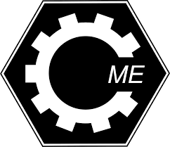

| Adatbázisrendszerek I. | Analízis I. | Programozás Alapjai |
|---|

Programozás Alapjai Kurzus tematikája:
A számítógép és programozása. Programozási nyelvek. A programkészítés menete. Algoritmusok és leírási módszereik. Számlálás és összegzés alapalgoritmusok.
A C programozási nyelv jellemzői és szintaktikai egységei. Eldöntés a kiválasztás alapalgoritmusok.
Operátorok és kifejezések, típuskonverzió a C nyelvben. A C program szerkezete. Integrátl programfejelesztő eszközök. Egyszerű ki- és bemeneti függvények. Szélsőérték kiválasztás alapalgoritmus.
A C nyelv utasításai. Vezérlési szerkezetek C nyelvű implementációja. Keresés alapalgoritmus.
Egydimenziós tömbök és mutatók. Tömbi algoritmusok. Véletlenszám generálás. Sztringek és kezelő függvényeik.
Függvények, programtervezési alapelvek.
Struktúrák, struktúra tömbök. Típusdefiníció. Dinamikus memóriakezelés. Önhivatkozó struktúrák.
Tárolási osztályok. Moduláris programozás. Filekezelés. Saját függvénykönyvtár és header állomány készítése.
Rekurzió, rendezés.
Kétdimenziós tömbök, mutató tömbök létrehozása és algoritmusai. Dinamikus memóriakezelés. Menü készítése. Függvénypointer.
A main függvény paraméterei és visszatérési értéke. A C fordító működése, az előfeldolgozó feladatai. Kiválogatás és szétválogatás alapalgoritmusok.
A C99/C11 szabvány új elemei. Kódolási szabvány. SE alapelvek. Unió, metszet, különbség, összefuttatás alapalgoritmusok.